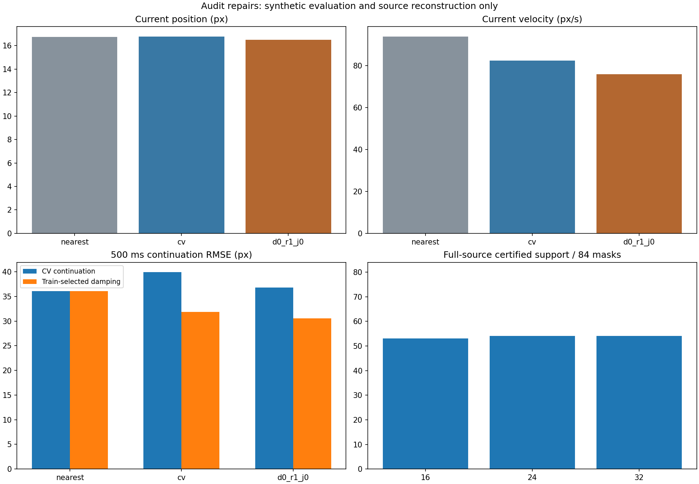

Open development. No promotion or universal superiority claim.
Full methods and results · Machine-readable evidence · Locked protocol

| method | position_rmse | velocity_rmse | supported | proposed | matched | median_episode_seconds | cv_0.25_rmse | train_damped_0.25_rmse | cv_0.5_rmse | train_damped_0.5_rmse |
|---|---|---|---|---|---|---|---|---|---|---|
| cv | 16.784 | 82.457 | 14049 | 15060 | 13929 | 0.006 | 25.998 | 23.032 | 39.940 | 31.883 |
| d0_r0_j0 | 16.697 | 77.140 | 14049 | 15060 | 13929 | 0.091 | 26.145 | 22.225 | 41.276 | 32.905 |
| d0_r0_j1 | 16.545 | 77.190 | 14049 | 15060 | 13929 | 0.107 | 28.893 | 22.736 | 47.349 | 33.344 |
| d0_r1_j0 | 16.506 | 75.973 | 14049 | 15060 | 13929 | 0.102 | 23.918 | 21.650 | 36.831 | 30.581 |
| d0_r1_j1 | 16.617 | 81.027 | 14049 | 15060 | 13929 | 0.093 | 28.575 | 22.743 | 46.528 | 33.342 |
| d1_r0_j0 | 18.325 | 77.521 | 14049 | 15060 | 13929 | 0.096 | 31.429 | 24.701 | 49.753 | 34.714 |
| d1_r0_j1 | 18.393 | 80.839 | 14049 | 15060 | 13929 | 0.094 | 39.433 | 26.328 | 67.401 | 36.211 |
| d1_r1_j0 | 16.674 | 78.752 | 14049 | 15060 | 13929 | 0.099 | 24.840 | 22.148 | 38.565 | 31.103 |
| d1_r1_j1 | 18.482 | 90.195 | 14049 | 15060 | 13929 | 0.079 | 48.440 | 28.351 | 85.802 | 37.881 |
| nearest | 16.758 | 93.921 | 14079 | 15060 | 13929 | 0.001 | 23.811 | 23.811 | 36.064 | 36.064 |
| method | detector | recall | matches | references | false_alarms | quiet_seconds | quiet_false_alarms_per_minute | median_delay_seconds | onset_recall | release_recall | reversal_recall |
|---|---|---|---|---|---|---|---|---|---|---|---|
| cv | common20 | 0.535 | 46 | 86 | 187 | 189.120 | 17.132 | 0.140 | 0.750 | 0.342 | 0.625 |
| d0_r0_j0 | common20 | 0.442 | 38 | 86 | 215 | 189.120 | 25.381 | 0.080 | 0.750 | 0.132 | 0.625 |
| d0_r0_j1 | common20 | 0.407 | 35 | 86 | 190 | 189.120 | 18.401 | 0.100 | 0.708 | 0.079 | 0.625 |
| d0_r1_j0 | common20 | 0.407 | 35 | 86 | 224 | 189.120 | 28.871 | 0.080 | 0.625 | 0.105 | 0.667 |
| d0_r1_j1 | common20 | 0.430 | 37 | 86 | 183 | 189.120 | 15.863 | 0.100 | 0.708 | 0.132 | 0.625 |
| d1_r0_j0 | common20 | 0.488 | 42 | 86 | 161 | 189.120 | 9.201 | 0.090 | 0.792 | 0.211 | 0.625 |
| d1_r0_j1 | common20 | 0.535 | 46 | 86 | 155 | 189.120 | 7.614 | 0.080 | 0.792 | 0.316 | 0.625 |
| d1_r1_j0 | common20 | 0.442 | 38 | 86 | 180 | 189.120 | 15.863 | 0.080 | 0.750 | 0.105 | 0.667 |
| d1_r1_j1 | common20 | 0.535 | 46 | 86 | 156 | 189.120 | 7.931 | 0.080 | 0.792 | 0.316 | 0.625 |
| nearest | common20 | 0.000 | 0 | 86 | 0 | 189.120 | 0.000 | NaN | 0.000 | 0.000 | 0.000 |
| budget | proposed | supported | fresh_supported | carried |
|---|---|---|---|---|
| 16 | 84 | 53 | 53 | 0 |
| 24 | 84 | 54 | 53 | 2 |
| 32 | 84 | 54 | 52 | 4 |
Source-geometry support and simulated motion are not independent real-video accuracy. Neural re-detection, external benchmarks and physical references remain pending.